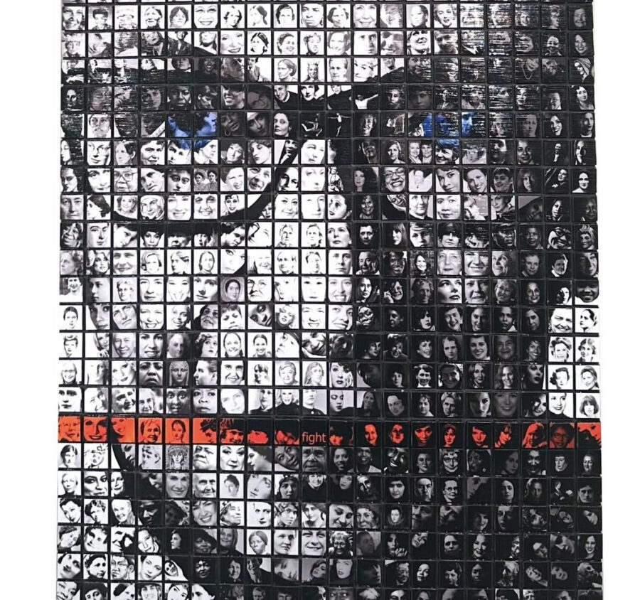

PICTURES OF YOU
Portraits encompass many forms, including traditionally posed portraits, candid portraits, environmental portraits, conceptual or symbolic portraits, and self-portraits. Representations of real or imagined individuals, couples, families, groups, etc.., in which their images are the primary focus are portraits.
Artistically inspired portraits strive to capture the subject’s personality, mood, essence, and character to communicate their uniqueness, story, voice or importance.